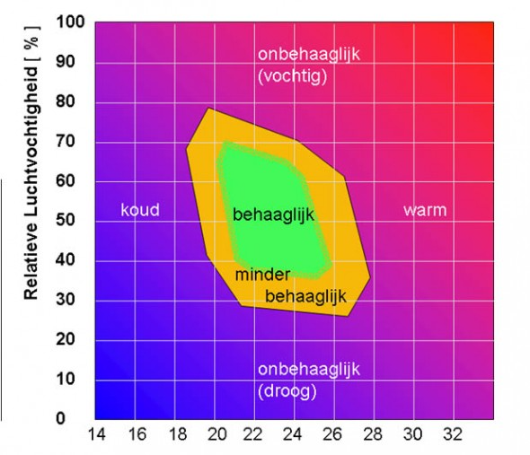
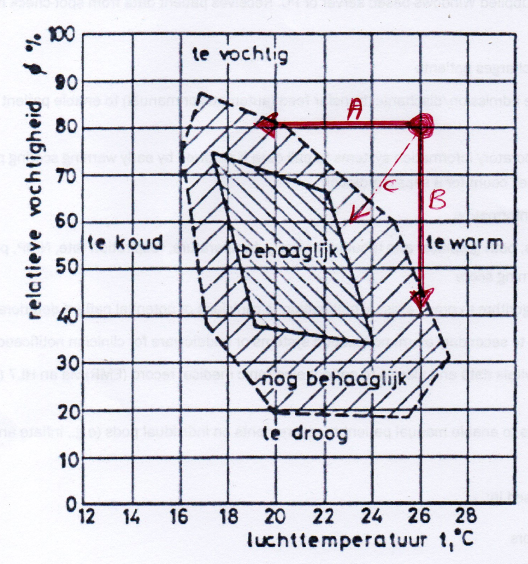
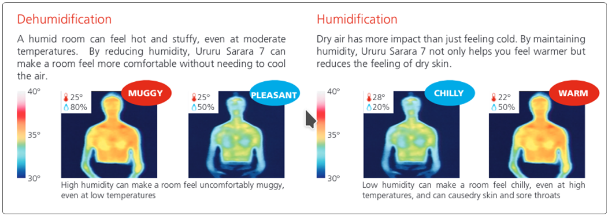
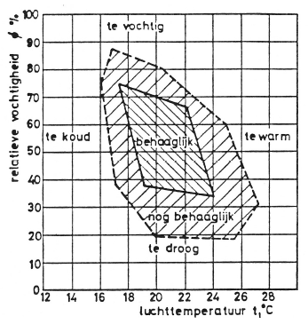
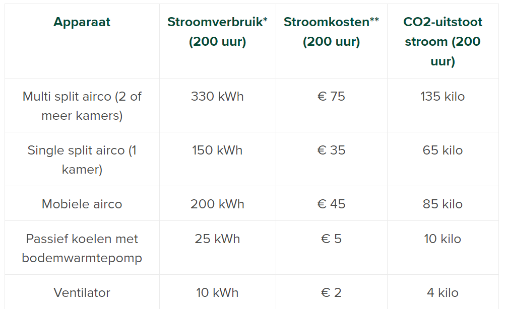
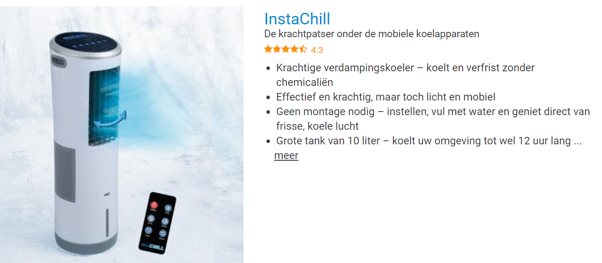

Een belangrijke factor in het woongenot oftewel de kwaliteit van het binnenmilieu, is het thermisch comfort, vaak kortweg comfort genoemd. Als het thermisch comfort goed is, zal dat in het algemeen ook een positieve invloed op het energiegebruik hebben.
Hoewel er meer dan 20 factoren van invloed zijn op het comfortgevoel in een woning, zijn de 2 belangrijkste Temperatuur [°C] en Relatieve Vochtigheid (RH) [%]
Hier onder is de behaaglijkheid weergegeven als functie van de temperatuur en de relatieve luchtvochtigheid.
We zien dat we een lage temperatuur nog steeds behaaglijk vinden als de luchtvochtigheid maar hoog genoeg is.
Evenzo, een hoge temperatuur vinden we nog best comfortabel, als het maar niet te vochtig is.
De relatieve luchtvochtigheid kun je dus het beste houden op
- In de Winter 65 … 70%, helaas is dat juist niet het geval
- In de Zomer 35 … 40%, helaas is dat juist niet het geval

Horizontaal de Temperatuur [°C]
Vertikaal: de Relatieve Vochtigheid (RH) [%]
Linksonder: winter, koud en droog
Rechtsboven: zomer, warm en vochtig
In de zomerperiode, en zeker tijdens een hittegolf, zitten we ergens rechtsboven in het plaatje, aangegeven door de rode stip. We kunnen nu op allerlei wijzen naar de comfortabele zone bewegen, maar de twee meest extreme wegen zijn aangegeven met de rode pijlen.
Weg A, het verlagen van de temperatuur, dit is de meest voor de hand liggende manier. (10 kWh/dag)
Weg B, het verlagen van de relatieve vochtigheid, dit is de meest energie zuinige manier. (2 kWh/dag)
Weg C, is een tussenvorm met zowel eigenschappen uit weg A als weg B bevat

Kleine toevoeging op weg A, de hoeveelheid vocht in de lucht verandert natuurlijk niet door te koelen, daardoor neemt bij dalende temperatuur de relatieve vochtigheid toe en dus zal het apparaat dat de koeling verzorgd ook een beetje moeten ontvochtigen.
In een Daikin folder is het effect van de Relatieve Vochtigheid zichtbaar gemaakt middels een warmtebeeldcamera : https://www.daikinairconditioning.com/global/media/pdf/1523961368-8928.pdf

Voor het binnenmilieu zijn onder andere de volgende factoren van invloed:
1. Temperatuur
2. Relatieve Vochtigheid
3. Luchtsnelheid
4. Combinatie van Temperatuur en Relatieve Luchtvochtigheid
5. Combinatie van Lucht-Temperatuur en Wand-Temperatuur (en/of Bodem- / Vloer-Temperatuur)
6. Combinatie van Temperatuur en Windsnelheid
7. CO2 gehalte
8. Concentratie VOC (Vluchtige Organische Stoffen)
9. Concentratie Fijnstof
10. Overige lucht verontreinigingen
11. Licht, sterkte en kleur
12. Ongewenste geluiden
13. Schimmels (kunnen een heel penetrante geur veroorzaken)
Het comfort gevoel lijkt een subjectieve maatstaf (en is uiteraard individueel afhankelijk), maar er zijn inmiddels zoveel praktische metingen verricht dat we toch wel kunnen spreken van objectieve parameters.
Wel is het zo dat het complete behaaglijkheidsgevoel van zoveel parameters afhankelijk is, dat het een zeer complexe theorie is geworden, waardoor in vele publicaties niet de gehele waarheid wordt verteld. In deze notitie worden daarom wel een aantal zaken sterk vereenvoudigd, zonder de oorzaak-gevolg reacties te veranderen, zonder essentiële parameters te missen en zonder de uiteindelijke conclusie te ontkrachten.
Ten slotte moet vermeld worden dat er nogal wat hardnekkige misverstanden in omloop zijn, voorbeeld hiervan "ik heb een ademende muur om de vochtigheid in mijn kamer op het juiste niveau te houden". Het klinkt goed, maar is complete onzin, één persoon produceert per uur 100 keer meer vocht dan door de best ademende muur per uur getransporteerd kan worden.
De optimale temperatuur is individueel afhankelijk maar ligt voor de meeste (Nederlandse) mensen tussen de 19 en 21 graden Celsius. Ook is de gewenste temperatuur afhankelijk van je activiteiten, zit je stil of ben je hard aan het werk en van de kleding die je aan hebt.
Belangrijke vraag is wat is de temperatuur in een ruimte eigenlijk? En de vervolg vraag is, meet het gebruikte regelelement (de kamerthermostaat) ook deze temperatuur of een andere temperatuur. In de volgende paragrafen zullen deze vragen nader aan bod komen.
Luchtverplaatsing of tocht wordt meestal als onprettig ervaren (behalve in de zomer). Als je duidelijk "tocht" voelt, is de meest waarschijnlijke oorzaak kieren tussen draaiende delen en de vaste delen of bij de aansluiting van de vaste delen op de muren. Maar ook grote temperatuur verschillen kunnen tocht veroorzaken (houd je hand maar eens boven een radiator).
Hier onder is de behaaglijkheid weergegeven als functie van de temperatuur en de relatieve luchtvochtigheid.
We zien dat we een lage temperatuur nog steeds behaaglijk vinden als de luchtvochtigheid maar hoog genoeg is.
Evenzo, een hoge temperatuur vinden we nog best comfortabel, als het maar niet te vochtig is. En dit leidt tot een aanzienlijke besparingstip voor mensen die een airco gebruiken (allereerst natuurlijk zo weinig mogelijk aanzetten), zet op warme dagen als het echt te heet is, de airco niet op de stand koelen, maar op de stand drogen !!!
De relatieve luchtvochtigheid kun je dus het beste houden op
- In de Winter 65 … 70%
- In de Zomer 35 … 40%

Web Informatie
De website van Milieu Centraal staat in het algemeen bekend als zeer objectief, onafhankelijk en betrouwbaar.
In het geval van airco's pleiten zij om deze liever niet aan te schaffen en daarvoor in de plaats een ventilator aan te schaffen. Dit wordt onderbouwd met de duimgetallen in onderstaande tabel.

Daarnaast zijn er commerciële bedrijven die een soort gelijke filosofie aanhouden. Ondanks dat ik hier geen ervaring mee heb, twijfel ik sterk aan het nuttig effect van deze apparaten, omdat de werking ervan tegenstrijdig is met de feiten hieronder.

Comfort
Het (thermisch) comfort van het milieu in de leefruimte is van vele factoren afhankelijk (zie ook overzichtsartikel in wording …), maar de twee belangrijkste parameters die het thermisch comfort bepalen zijn temperatuur en luchtvochtigheid. Het thermisch comfort op basis van deze twee parameters kan worden weergegeven in onderstaande grafiek.
In de zomerperiode, en zeker tijdens een hittegolf, zitten we ergens rechtsboven in het plaatje, aangegeven door de rode stip. We kunnen nu op allerlei wijzen naar de comfortabele zone bewegen, maar de twee meest extreme wegen zijn aangegeven met de rode pijlen.
Weg A, het verlagen van de temperatuur, dit is de meest voor de hand liggende manier.
Weg B, het verlagen van de relatieve vochtigheid, dit is de meest energie zuinige manier
Weg C, is een tussenvorm met zowel eigenschappen uit weg A als weg B.bevat
Kleine toevoeging op weg A, de hoeveelheid vocht in de lucht verandert natuurlijk niet door te koelen, daardoor neemt bij dalende temperatuur de relatieve vochtigheid toe en dus zal het apparaat dat de koeling verzorgd ook een beetje moeten ontvochtigen.
In een Daikin folder is dit ook eens zichtbaar gemaakt middels een warmtebeeldcamera : https://www.daikinairconditioning.com/global/media/pdf/1523961368-8928.pdf